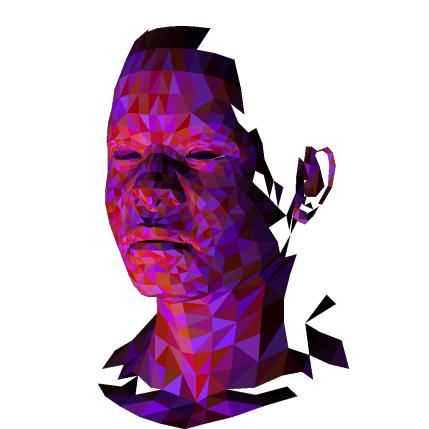
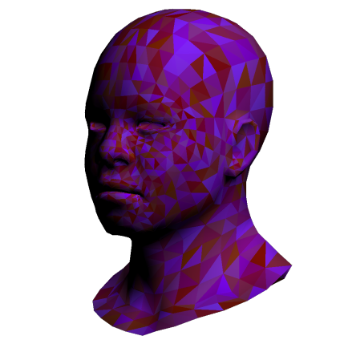

Software Rasterization


This was a project done with the Graphics Programming Virtual Meetup, the weekly book club that I've been participating in for the past 6 months or so. We went through the tinyrenderer Software Rasterization tutorial. My implementation made a few interesting changes and improvements from what the tutorial was doing, and there are a few things which might be interesting to return to.
The tutorial takes an interesting approach, building up to how shader-based modern OpenGL works, by implementing things in a bottom-up sort of way, implementing z-buffering and triangle drawing yourself. I think this was a valuable exersize, as a way of understanding how much really is going on when you use a graphics API like OpenGL, as well as getting an appreciation for how well and how quickly these hardware based implementations work.
The most important concept to be talked about here is the idea of barycentric coordinates. When you consider a triangle which will be displayed on the screen, there are three points which make up the shape. The barycentric coordinates are a 3-tuple which can be calculated for any point on that triangle. The elements of this tuple sum to one - the individual elements are used for weighted averaging, for example, when you want to interpolate normals or texture coordinates across a triangle.
The things you can see above use this information for these purposes. I was able to produce the frames for the gifs above in about 10ms per frame, and generated a live preview in my engine, while dumping out frames for the animation. The looping was done with some sinusoids, which were used to do the transformation of the geometry as well as the positioning of the lights. One of the big improvments I did over the suggested implementation (details of which on the tutorial were kind of glossed over, this is very much a DIY sort of tutorial) was the addition of an alpha channel, for the cool transparent gifs above, as well as PNG output vs the suggested TGA.
Future Directions
There are a few elements left from the tutorial that I have not implemented - normal mapping, backface culling, and the shader abstraction are among these. All the models and textures used on this page are provided as part of the tutorial, by Dmitry V. Sokolov.
Another thing to consider is to keep a vector of cantidate fragments for all triangles for a given pixel, and see if there were interesting applications for this model, perhaps treating them as points and reprojecting this point cloud, or do to interesting kinds of order-independent transparency. This is a limitation of graphics APIs which I have butted up against before, where alpha blending introduces order dependence into this otherwise massively parallel system.